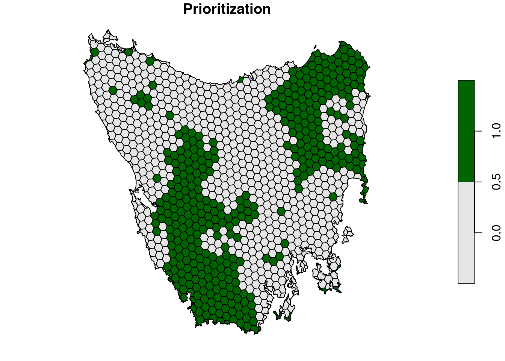
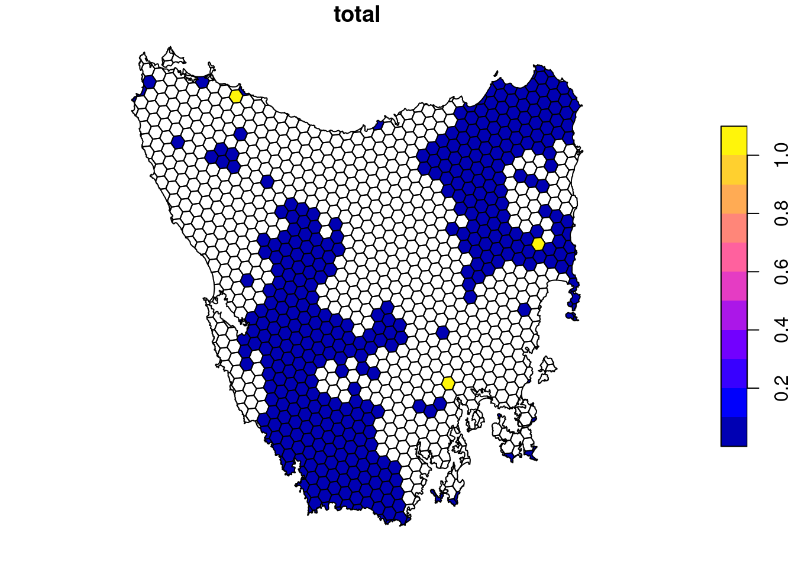
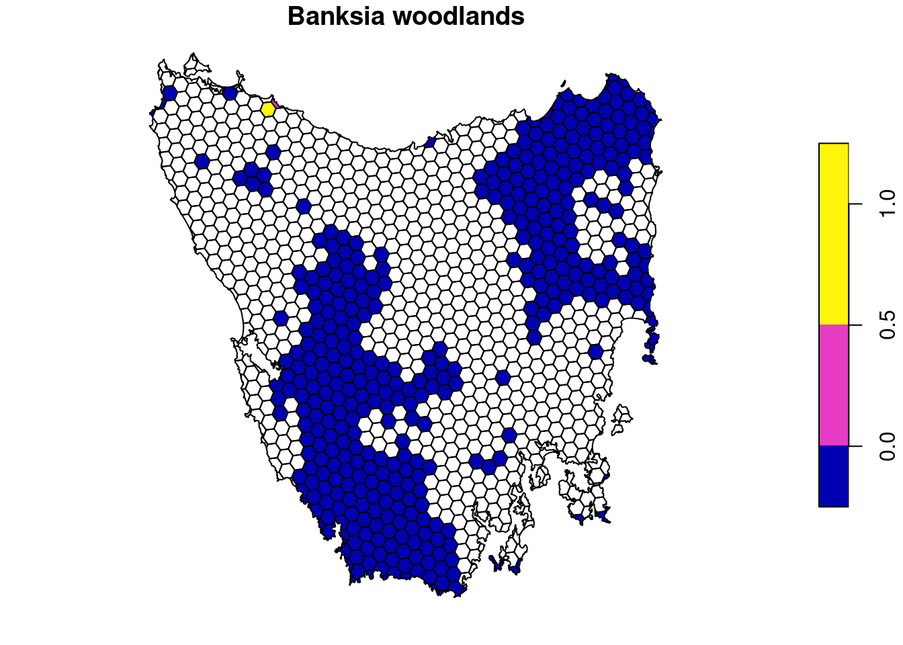

Chapter 6 Importance
6.1 Introduction
Systematic conservation planning involves identifying priority areas for conservation actions (Margules & Pressey 2000). As we saw in the previous section, we can generate a spatial prioritization that optimizes a particular objective, given a set of constraints, to identify a set of priority areas for management. This information is very useful because it provides a complete and cost-effective plan for achieving our conservation goals. However, when we just look at the priority areas in a spatial prioritization, we don’t necessarily know which priority areas – among all the priority areas in the spatial prioritization – are more or less important for conservation. For example, if we generated a spatial prioritization based on threatened and non-threatened species, it would be useful to know which priority areas are necessary to protect because they contain species that are not found anywhere else in the study area. To obtain this information, we can calculate importance scores for the planning units selected in the prioritization. This information can be useful for scheduling implementation of conservation plans and finding compromises for stakeholder discussions (Pressey 1999).
6.2 Quantifying irreplaceability
To keep things simple, let’s start by creating a new conservation planning problem and solving it to generate a spatial prioritization. This will be very similar to one of the prioritizations that we generated in the previous section. Specifically, we will use the minium set objective, 30% representation targets, locked in, locked out constraints, and binary decisions.
# create prioritization problem
p8 <-
problem(pu_data, veg_data, cost_column = "cost") %>%
add_min_set_objective() %>%
add_boundary_penalties(penalty = 0.001) %>%
add_relative_targets(0.3) %>%
add_locked_in_constraints("locked_in") %>%
add_locked_out_constraints("locked_out") %>%
add_binary_decisions() %>%
add_highs_solver(verbose = FALSE)
# print problem
print(p8)## A conservation problem (<ConservationProblem>)
## ├•data
## │├•features: "Banksia woodlands" , … (33 total)
## │└•planning units:
## │ ├•data: <sftbl_dftbldata.frame> (1130 total)
## │ ├•costs: continuous values (between 0.1925 and 61.9273)
## │ ├•extent: 298809.5764, 5167774.5993, 613818.7743, 5502543.7119 (xmin, ymin, xmax, ymax)
## │ └•CRS: WGS 84 / UTM zone 55S (projected)
## ├•formulation
## │├•objective: minimum set objective
## │├•penalties:
## ││└•1: boundary penalties (`penalty` = 0.001, `edge_factor` = 0.5, …)
## │├•targets: relative targets (between 0.3 and 0.3)
## │├•constraints:
## ││├•1: locked in constraints (257 planning units)
## ││└•2: locked out constraints (165 planning units)
## │└•decisions: binary decision
## └•optimization
## ├•portfolio: shuffle portfolio (`number_solutions` = 1, …)
## └•solver: highs solver (`gap` = 0.1, `time_limit` = 2147483647, …)
## # ℹ Use `summary(...)` to see complete formulation.# solve problem,
s8 <- solve(p8)
# print solution
## note we use head() to show only show the first 6 rows
head(s8)## Simple feature collection with 6 features and 6 fields
## Geometry type: MULTIPOLYGON
## Dimension: XY
## Bounding box: xmin: 303910.1 ymin: 5485840 xmax: 335610.4 ymax: 5502544
## Projected CRS: WGS 84 / UTM zone 55S
## # A tibble: 6 × 7
## id cost locked_in locked_out pa_status solution_1
## <int> <dbl> <lgl> <lgl> <dbl> <dbl>
## 1 1 60.2 FALSE TRUE 0 0
## 2 2 19.9 FALSE FALSE 0 0
## 3 3 59.7 FALSE TRUE 0 0
## 4 4 32.4 FALSE FALSE 0 0
## 5 5 26.2 FALSE FALSE 0 0
## 6 6 51.3 FALSE TRUE 0 0
## # ℹ 1 more variable: geom <MULTIPOLYGON [m]># plot solution
plot(
s8[, "solution_1"], main = "Prioritization",
pal = c("grey90", "darkgreen")
)
Now, we will calculate importance scores. Specifically, we will calculate importance scores based on irreplaceability metric developed by Ferrier et al. (2000). These scores describe how important each planning unit is for meeting the representation targets. Briefly, the metric calculates a score for each feature separately – so we can tell which planning units are more important for particular features – and a total score describing the overall importance each planning unit has meeting all the targets. Although the disadvantage of this method is that it does not account for planning unit costs (c.f., the replacement cost metric, Cabeza & Moilanen 2006), it is useful because it accounts for the representation targets and can be calculated relatively quickly for problems with many planning units and features.
# calculate Ferrier scores
i8 <- eval_ferrier_importance(p8, s8[, "solution_1"])
# set NA values for planning units not selected in solution
i8 <-
i8 %>%
mutate_at(
c("total", names(veg_data)),
function(x) x * if_else(s8$solution_1 > 0.5, 1, NA_real_)
)
# print scores
## note we use head() to show only show the first 6 rows
head(i8)## Simple feature collection with 6 features and 34 fields
## Geometry type: MULTIPOLYGON
## Dimension: XY
## Bounding box: xmin: 303910.1 ymin: 5485840 xmax: 335610.4 ymax: 5502544
## Projected CRS: WGS 84 / UTM zone 55S
## # A tibble: 6 × 35
## `Banksia woodlands` Boulders/rock with algae, lichen …¹ Callitris forests an…²
## <dbl> <dbl> <dbl>
## 1 NA NA NA
## 2 NA NA NA
## 3 NA NA NA
## 4 NA NA NA
## 5 NA NA NA
## 6 NA NA NA
## # ℹ abbreviated names:
## # ¹`Boulders/rock with algae, lichen or scattered plants, or alpine fjaeldmarks`,
## # ²`Callitris forests and woodlands`
## # ℹ 32 more variables: `Cool temperate rainforest` <dbl>,
## # `Eucalyptus (+/- tall) open forest with a dense broad-leaved and/or tree-fern understorey (wet sclerophyll)` <dbl>,
## # `Eucalyptus open forests with a shrubby understorey` <dbl>,
## # `Eucalyptus open woodlands with shrubby understorey` <dbl>, …# plot total scores across all features
plot(i8[, "total"])
# plot scores for first feature
plot(i8[, names(veg_data)[1]])
# plot scores for second feature
plot(i8[, names(veg_data)[1]])Here we can see that some planning units in the prioritization have much higher importance scores than other planning units. If you’re familiar with Marxan, the importance scores here convey a similar concept to the selection frequency. However, the advantage with this approach is that you don’t need to generate tens of thousands of solutions in order to evaluate the relative importance of different planning units. Additionally, you can see which planning units are more, or less, important for particular features. This can be useful to help understand why certain planning units were selected by the prioritization.
- Which parts of the study area have the highest importance values?
- How do the total importance values change when you decrease the targets from 30% to 10%?